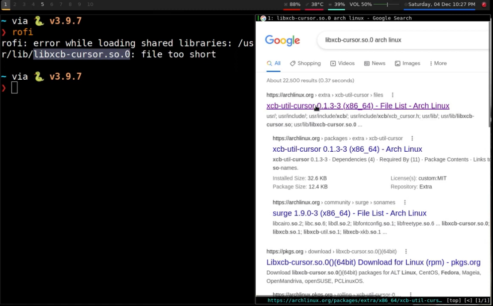
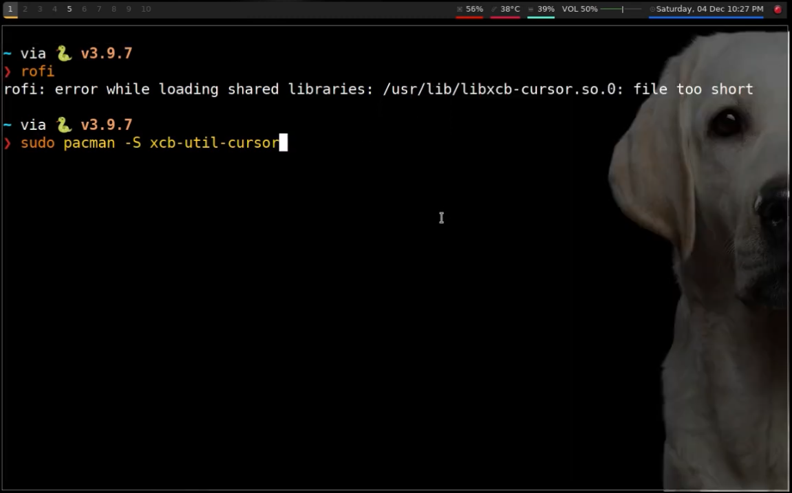
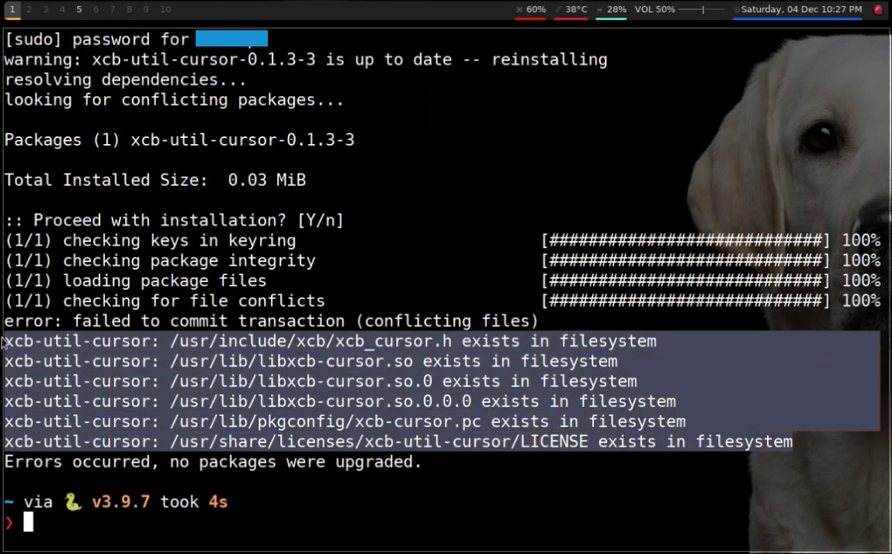
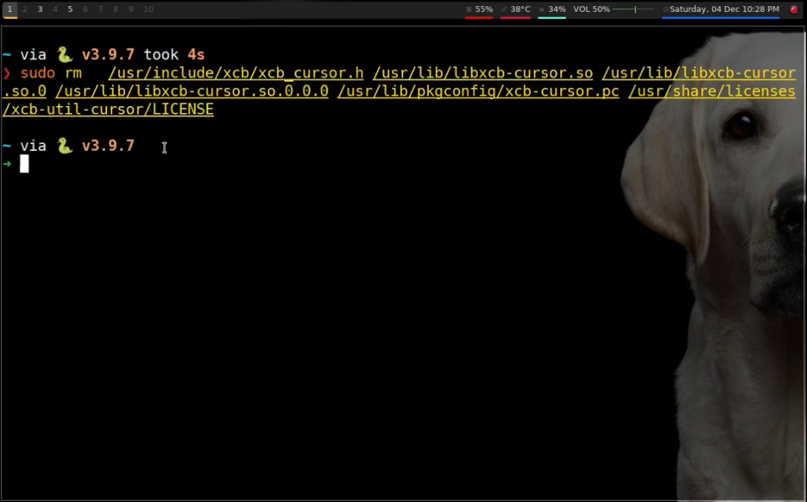
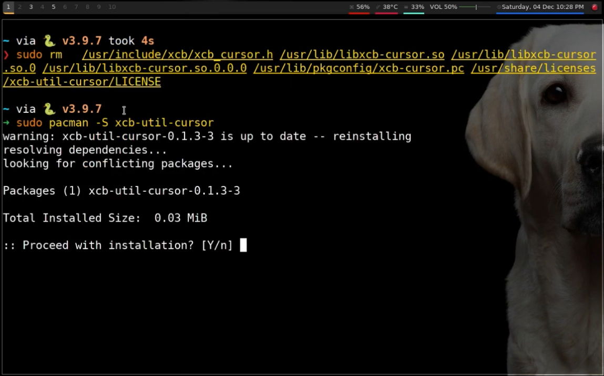
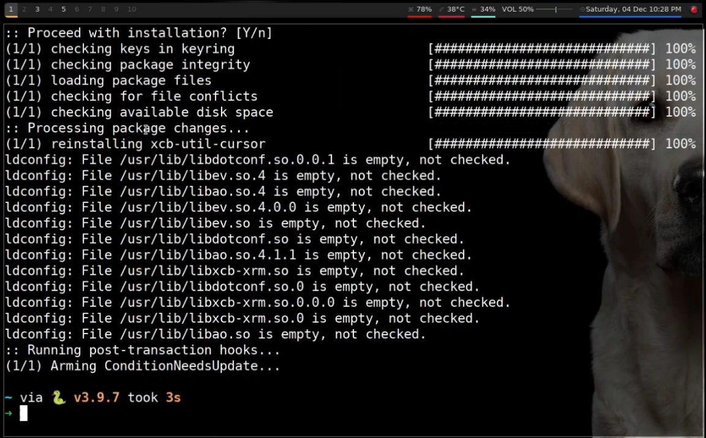
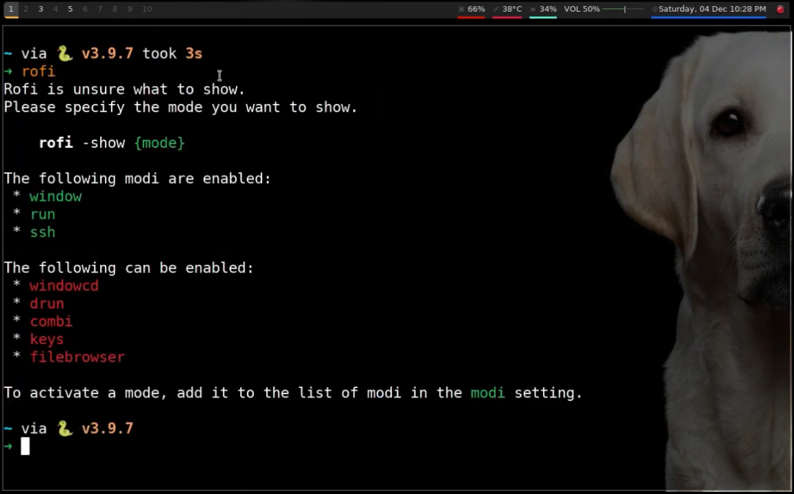

The reason of this error being produced is because the library file it is talking about is too short or empty. This method can be used to solve any library file too short errors. You can always watch the video guide on YouTube if you have any confusions in following the commands below.
1. First, we will search the file name on Google to check what is the name of the library package.
2. Then we will update that package.
3. While the package is updating, you might get some errors that will say that some files are already in the filesystem. If you get this error, delete all the files listed in the error.
 4. Then update the package again and it should update without any errors.
 5. And now, the error is solved!
